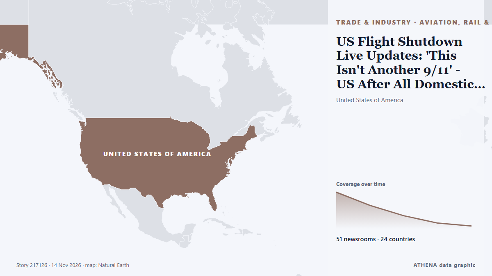

Εμπόριο, Βιομηχανία & Υποδομές
ΧορηγούμενοΠαρουσιάζεται από  Cybernetics and Artificial Intelligence Lab Welcome to the Cybernetics and Artificial Intelligence Laboratory, established at the Department of Business Administration of the National and Kapodistrian University of Athens. The lab is headed by Professor Dimitrios Thomakos. The lab aims to do research that can be published in top venues. Our research uses tools and methods of Artificial Intelligence, and lies in the following areas: - Forecasting - Decision making - Cyber security - Finance We are always looking forward to collaborating with exceptional students!
Cybernetics and Artificial Intelligence Lab Welcome to the Cybernetics and Artificial Intelligence Laboratory, established at the Department of Business Administration of the National and Kapodistrian University of Athens. The lab is headed by Professor Dimitrios Thomakos. The lab aims to do research that can be published in top venues. Our research uses tools and methods of Artificial Intelligence, and lies in the following areas: - Forecasting - Decision making - Cyber security - Finance We are always looking forward to collaborating with exceptional students!
Οι τίτλοι των ειδήσεων παρουσιάζονται στα αγγλικά, όπως δημοσιεύτηκαν.

Αερομεταφορές, σιδηρόδρομος & οδικέςUS Flight Shutdown Live Updates: 'This Isn't Another 9/11' - US After All Domestic Flights Grounded
The US Federal Aviation Administration grounded all departing flights nationwide after a communications failure hit air traffic control centers across the country, disrupting thousands of flights. από RTÉ News
| 1 Νοε | 65 |
|---|---|
| 2 Νοε | 128 |
| 3 Νοε | 91 |
| 4 Νοε | 93 |
| 5 Νοε | 105 |
| 6 Νοε | 75 |
| 7 Νοε | 44 |
| 8 Νοε | 49 |
| 9 Νοε | 117 |
| 10 Νοε | 145 |
| 11 Νοε | 109 |
| 12 Νοε | 82 |
| 13 Νοε | 49 |
| 14 Νοε | 1 |
Vietnam Morning Monitor: France seeks to expand helicopter, frigate building cooperation, US looks to boost chicken exports to Vietnam
Black Friday shopping starts three weeks early in Ho Chi Minh City. από Tuoi Tre News
British Airways plane suffers tail strike at heathrow
A dramatic tail strike incident has been caught on camera at London’s Heathrow Airport. από Daily Mirror
Evergreen Line Resumes Suez Canal Transits with Ever Eon's Maiden Voyage
Evergreen Line returns to the Suez Canal, marking a significant shift in container shipping as Ever Eon completes its first transit. από SeaNews Türkiye
Iran says tanker carrying LNG hit mine, suffered explosion in Strait of Hormuz
Iran's Revolutionary Guards navy said a tanker carrying liquefied natural gas struck a naval mine and suffered an explosion in the Strait of Hormuz on Friday while using what they described was an… από Deccan Herald
Port of Los Angeles Handles Over 1 Million TEUs in October
The Port of Los Angeles handled 1,026,872 Twenty-Foot Equivalent Units (TEUs) in October, setting a record for the month and ranking as the second-highest monthly… από Maritime Professional
Ukraine loses nearly 400 locomotives this year alone — transport minister
Nikolay Kalashnik believes that losses of locomotives, rolling stock, and railway infrastructure will only increase in the future. από TASS (English)
Two PSNI officers sacked over ‘utterly despicable’ behaviour toward vulnerable people
One incident saw officer record video of a woman with learning difficulties in bed while he made sexualised comments. από The Irish Times
Trakia Motorway deadly pile-ups No Documentation Irregularities Found in Vehicles Involved in Trakia Motorway Pile-Ups
About 50 other people were injured in the pile-ups along a section of the Trakia motorway, officials have said. από BBC News
Tanzania uses Kenya’s experience in PPP framework to advance its infrastructure projects
NAIROBI: TANZANIA is seeking to strengthen the implementation of infrastructure projects through the Public-Private Partnership (PPP) framework by drawing lessons from Kenya’s experience in… από Daily News
Oil tanker catches fire after hitting naval mine in Hormuz, Iran says
Coalition says it destroyed two ballistic missile launchers The Coalition has released footage it says shows the targeting and destruction of two ballistic missile launch platforms. από Gulf News
Maran Tankers takes delivery of newbuild dual-fuel tanker Maran Myron
Maran Tankers Management, part of the Angelicoussis Group, led by Maria Angelicoussis, has announced the delivery of its newbuild tanker *Maran Myron*. από Naftemporiki (English)
Six bags of musical instruments delayed, Amjad Ali Khan seeks British Airways' help
Dubai: Indian classical music legend Amjad Ali Khan has appealed to British Airways for urgent assistance after six pieces of baggage containing musical instruments were delayed during his ongoing… από Gulf News
Company crash raises concerns about landowner’s plan to open explosives factory
Martin Shipton Fresh concerns have been raised about plans by one of Wales’ best-known landowners to open an explosives factory in a national park because of his links to a company that collapsed… από Nation.Cymru
Government to backtrack on working visa crackdown
The Albanese government is poised to backtrack on its crackdown on backpacker working visas. από Sydney Morning Herald
ATI Secures Manila South Harbour Concession Renewal To 2063
Renewal provides long-term certainty for ATI to advance investment in port modernisation, innovation and sustainable infrastructure MANILA, PHILIPPINES – Media OutReach Newswire – 12 November 2026… από Laotian Times
Monjasa adds five sister tankers in major fleet renewal deal
Global oil and shipping group, Monjasa is adding five sister tankers to its fleet in the company’s largest-ever tonnage acquisition,. από Cyprus Shipping News
Trump Threatens to Double Tariffs on Mexico if it Does Not Halt Migrants
WASHINGTON: President Donald Trump on Thursday threatened to double tariffs on Mexico if it does not stop more than a thousand migrants walking north toward the United States after last week’s US… από Business Recorder
Auramarine to provide methanol fuel supply systems for hydrographic research vessels
Finland’s Auramarine has announced it has signed an agreement with Spain-based Astilleros Gondán S.A. από Bunkerspot
Marlink Secures BV Certification for XChange NextGen Platform
Marlink has secured Bureau Veritas (BV) type approval for the XChange NextGen edge platform, giving shipowners independent assurance that their onboard digital infrastructure… από Maritime Professional
United Airlines Blocks A.I. Agents From Booking Flights
The carrier said that to protect customers’ information and comply with regulations, it was barring the digital assistants from logging into accounts and managing reservations. από New York Times Business
More than one million in Lebanon face acute food insecurity, UN says
More than one million people in Lebanon face acute food insecurity, the United Nations warned on Wednesday, following years of war and economic crisis. από Naharnet
N. Korea's Kim inspects east coast naval base under construction, urges timely completion
SEOUL, Nov. 12 (Yonhap) -- North Korean leader Kim Jong-un has inspected a major... από Yonhap (English)
Ryanair changes bag drop rules for all European travellers
As of November 10th, passengers flying with Europe's biggest budget airline must check their luggage at least an hour before departure. από The Local Switzerland
Eurostar disruption after bomb alert at French train station
Passengers at St Pancras station in London were facing long queues after several services were disrupted following the threat. από Evening Standard (London)
Iran warns of domestic gas shortages from war this winter
Iranian government officials have cautioned about impending gas shortages due to damage from ongoing conflict with the United States, potentially affecting major areas including Tehran. από Arab News
Iran says 3 tankers caught fire in Hormuz
The Revolutionary Guards did not specify the names or nationality of the tankers. από Free Malaysia Today
Oman rally to edge Libya in Arab beach soccer opener
MUSCAT, NOV 5Oman recovered from conceding in the opening minute to defeat Libya 3-2 at the Porto Said Beach Soccer Stadium in Egypt on Thursday, making a winning start to their Ar... από Oman Observer
Panama Canal increases daily transit capacity to 34 slots
The Panama Canal has increased its daily transit capacity to 34 booking slots and raised the maximum allowable draft for vessels using the Neopanamax locks. από Container News
Cathay Pacific orders 14 Airbus aircrafts to expand its fleet
Hong Kong flagship carrier Cathay Pacific said on Wednesday it has exercised its purchase rights for 14 more regional widebody and narrowbody Airbus aircraft as part of its fleet expansion and… από Business Recorder
Greek mayors and ruling party MPs rebel against new building density plans in Athens’ northern suburbs
Six mayors have appealed to Prime Minister Kyriakos Mitsotakis to withdraw proposed planning changes that could significantly increase construction in Athens’ northern suburbs, amid mounting… από ProtoThema English
Asia buys up African, Brazilian oil as shipping costs fall
Asian buyers are taking advantage of decreased shipping costs to purchase more African and Brazilian crude oil. από Arab News
Passenger held over hijack threat to Kolkata-Mumbai Air India flight
Following protocol, an alert was sounded immediately, and the plane was moved to the isolation bay. από Hindustan Times
Get your data in order and set a course for greener shipping
There is cause for optimism in the shipping sector, and we are seeing more and more initiatives aimed at making shipping greener. από Container News